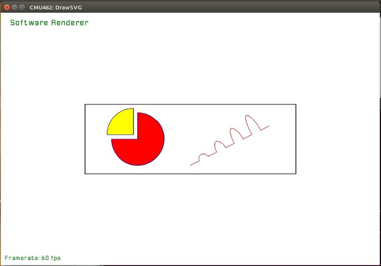
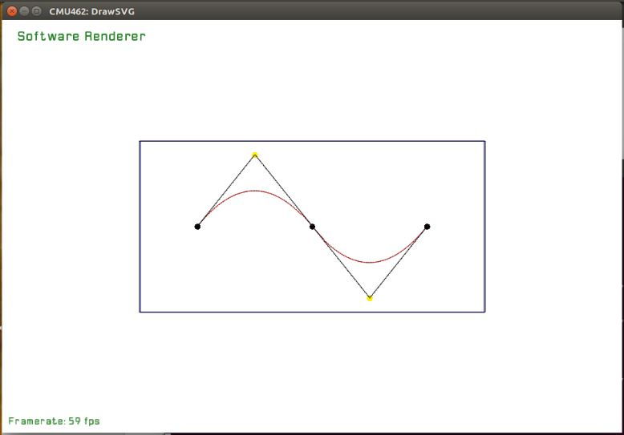
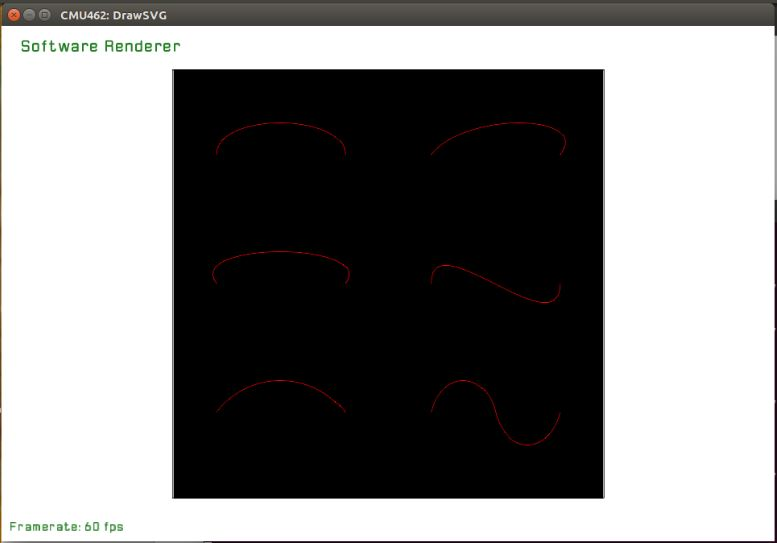
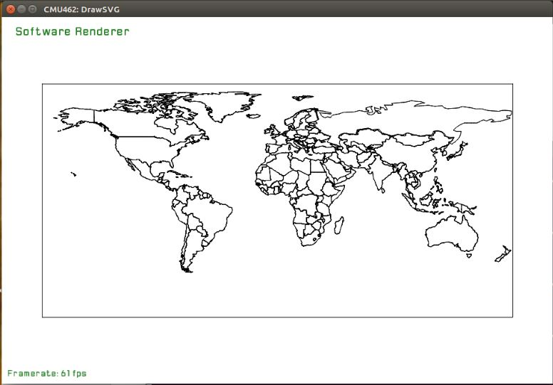
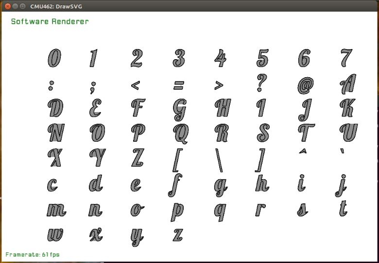
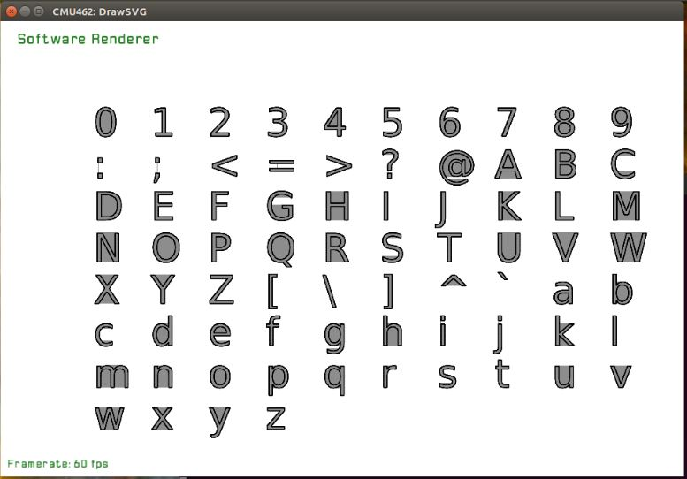
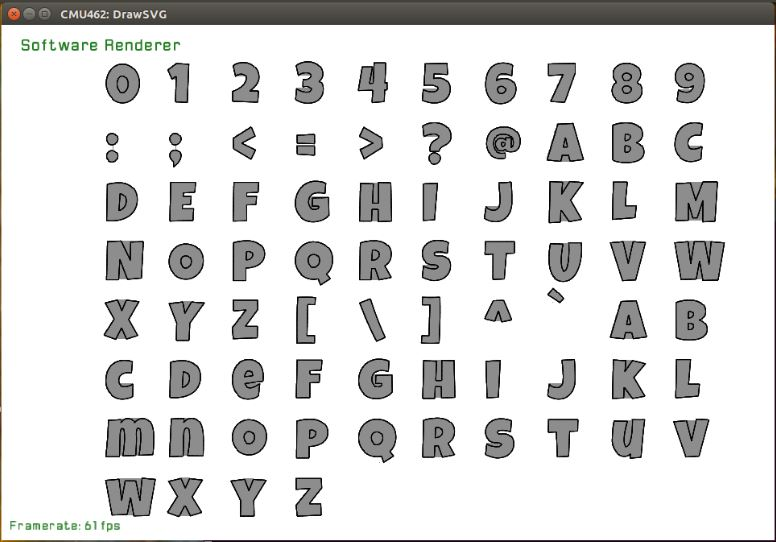

Anqi Bai(AndrewId: anqib)
CG_HW5
I plan to work on the font rendering task, which is based on the assignment 1 SVG rasterizer.
The rasterizer should be extended to support cubic/quadratic Bezier curves in order to handle fonts. Thus I plan to add support of the SVG "path" element, which is used in SVG files to describe cubic and quadratic Bezier curves (and ellipse arcs).
In order to add some font rendering utilities to the rasterizer, the TrueType or PostScript font files should be handled to extract the descriptions of fonts. An existing font loader will be integrated to the rasterizer, and the input font should be displayed by the rasterizer in some way.
I submitted the code for this assignment in:
/afs/cs/academic/class/15462-f15-users/anqib/asst_late_submission/CG_HW1
The building method is the same as assignment 1:
$ mkdir build && cd build && cmake ../src && makeThe Nanosvg header file is used for SVG path parsing. Functions in Nanosvg translates all kinds of SVG paths into cubic Bezier curves. The rasterization of cubic Bezier curves is implemented in software_renderer.cpp. The support of SVG path tag can be tested using the files in /svg/Path/ folder.
$./draw_svg ../svg/Path/quad01.svg$./draw_svg ../svg/Path/testCubic.svg$./draw_svg ../svg/Path/arcs01.svg$./draw_svg ../svg/Path/worldMap.svgScreenshots:
   The Font_to_svg header file is included for font glyph extracting. A font view utility is added to the rasterizer. If the input file is of .ttf type (TrueType font), some characters will be displayed using this font.
Usage example:
$./draw_svg ../svg/fonts/Vera.ttf$./draw_svg ../svg/fonts/Lobster-Regular.ttfscreenshots:
  There are still bugs in the path shape filling implementaion (as is shown in the screenshots).